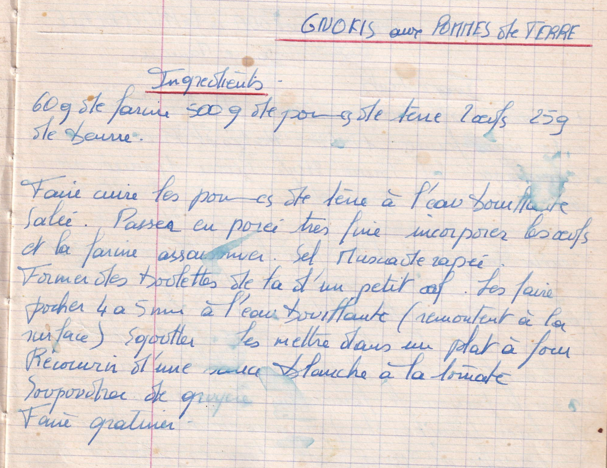

Gnokis aux pommes de terre

LISTE DES INGREDIENTS
- 60gr de farine
- 500gr de pommes de terre
- 2 oeufs
- 25gr de beurre
PREPARATION
- Faire cuire les pommes de terre à l'eau bouillante salée
- Passer en purée très fine
- Incorporer les oeufs, la farine et assaisonner sel muscade rapée
- Former des boulettes de la taille d'un petit oeuf
- Les faire pocher 4 à 5min à l'eau bouillante (remontent à la surface)
- Egoutter
- Les mettre dans un plat à four
- Recouvrir d'une sauce blanche à la tomate
- Saupoudrer de gruyère
- Faire gratiner